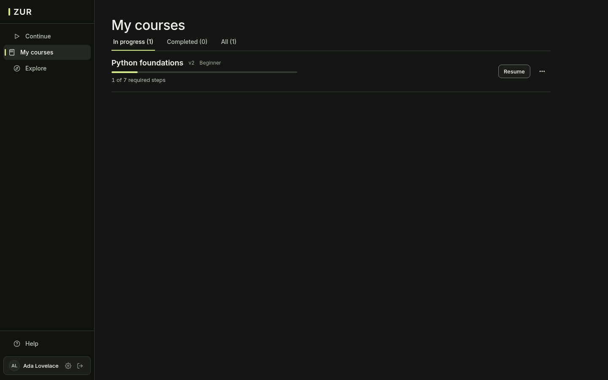
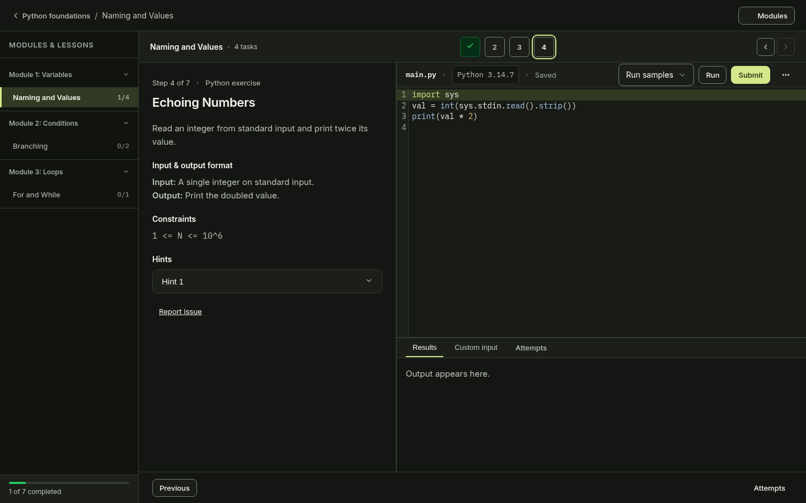
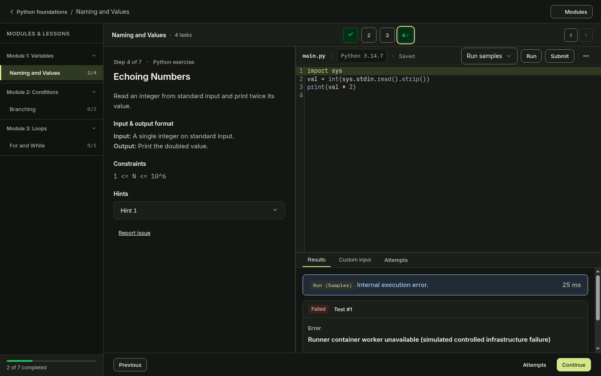
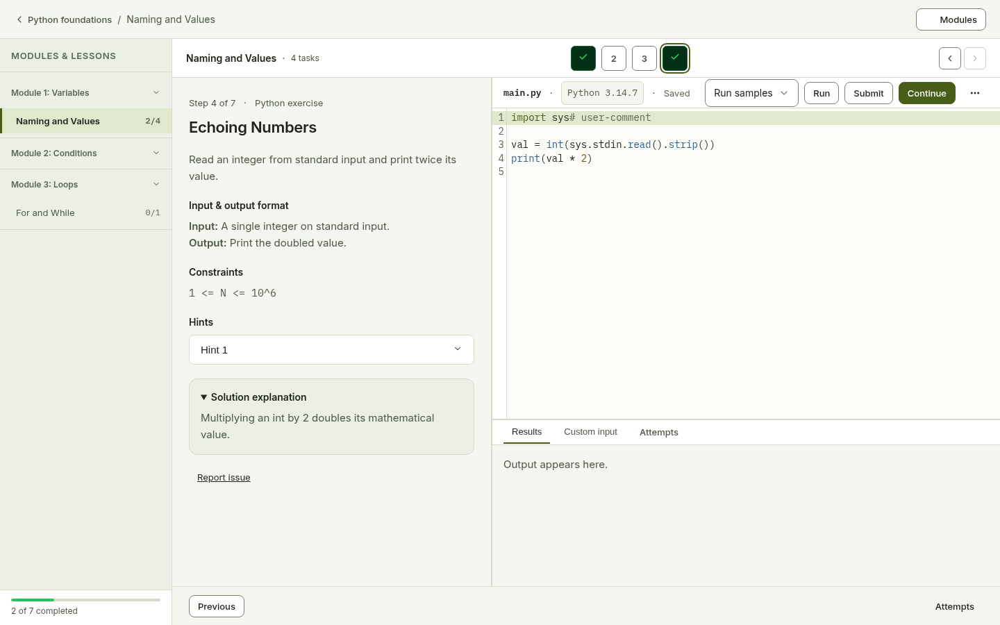
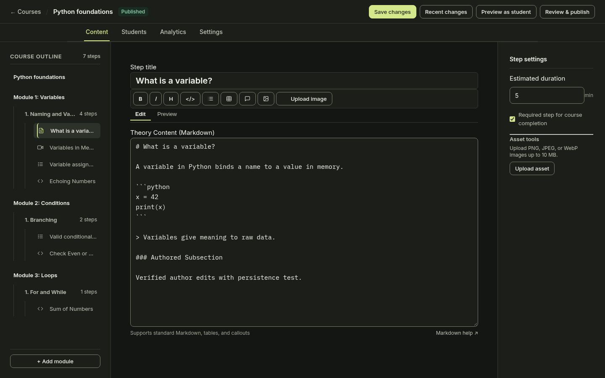
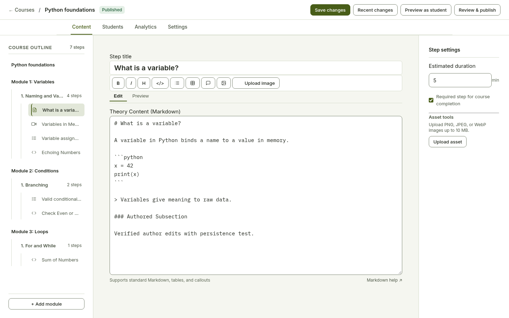

Learner Dashboard Learner · Dark
My Courses Learner · Dark

Course Outline Learner · Dark
Step Theory Learner · Dark
Step Video Learner · Dark
Step Quiz Learner · Dark
Python Workspace Editor Learner · Dark


Python Workspace Custom Input Learner · Dark
Python Workspace Run Feedback Learner · Dark
Python Workspace Infrastructure Error Learner · Dark
No matching baseline was captured for this interaction.

Python Workspace Report Modal Learner · Dark
Submission History Learner · Dark
Settings Profile Learner · Dark
Settings Appearance Learner · Dark
Settings Security Learner · Dark
Settings Privacy Learner · Dark
Light Theme Workspace Learner · Light
No matching baseline was captured for this interaction.

Author Dashboard Author · Dark
Author Dashboard Author · Light
Course Builder Outline Author · Dark
Course Builder Outline Author · Light
Step Editor Theory Author · Dark
Step Editor Theory Author · Light
Step Editor Theory Dirty Author · Dark
No matching baseline was captured for this interaction.

Step Editor Theory Dirty Author · Light
No matching baseline was captured for this interaction.

Step Editor Video Author · Dark
Step Editor Video Author · Light
Step Editor Quiz Author · Dark
Step Editor Quiz Author · Light
Step Editor Python Author · Dark
Step Editor Python Author · Light
Student Preview Author · Dark
Student Preview Author · Light
Student Preview Python Author · Dark
No matching baseline was captured for this interaction.
Student Preview Python Author · Light
No matching baseline was captured for this interaction.
Publish Review Author · Dark
Publish Review Author · Light
Roster Students Author · Dark
Roster Students Author · Light
Student Detail Author · Dark
Student Detail Author · Light
Course Analytics Author · Dark
Course Analytics Author · Light
Course Settings Author · Dark
Course Settings Author · Light
Ai Connections Author · Dark
Ai Connections Author · Light
Connection Setup Author · Dark
Connection Setup Author · Light
Agent Activity Drafts Author · Dark
Agent Activity Drafts Author · Light
Operations Overview Admin · Dark

Operations Overview Admin · Light

Users List Admin · Dark

Users List Admin · Light

User Detail Admin · Dark

User Detail Admin · Light

Courses List Admin · Dark

Courses List Admin · Light

Course Detail Admin · Dark

Course Detail Admin · Light

Categories Admin · Dark

Categories Admin · Light

Reports List Admin · Dark

Reports List Admin · Light

Report Detail Admin · Dark

Report Detail Admin · Light

Media Admin · Dark
Media Admin · Light
Execution Admin · Dark

Execution Admin · Light
Audit List Admin · Dark

Audit List Admin · Light

Audit Detail Admin · Dark
Audit Detail Admin · Light
Execution Dialog Admin · Dark

Execution Dialog Admin · Light
Category Edit Dialog Admin · Dark

Category Edit Dialog Admin · Light

Dialog Suspend User Error Admin · Dark
No matching baseline was captured for this interaction.
Dialog Suspend User Error Admin · Light
No matching baseline was captured for this interaction.
User Suspended Receipt Admin · Dark
No matching baseline was captured for this interaction.
User Suspended Receipt Admin · Light
No matching baseline was captured for this interaction.
User Restored Receipt Admin · Dark
No matching baseline was captured for this interaction.

User Restored Receipt Admin · Light
No matching baseline was captured for this interaction.

Dialog Manage Roles Error Admin · Dark
No matching baseline was captured for this interaction.
Dialog Manage Roles Error Admin · Light
No matching baseline was captured for this interaction.
Roles Author Granted Receipt Admin · Dark
No matching baseline was captured for this interaction.
Roles Author Granted Receipt Admin · Light
No matching baseline was captured for this interaction.
Dialog Support Access Error Admin · Dark
No matching baseline was captured for this interaction.
Dialog Support Access Error Admin · Light
No matching baseline was captured for this interaction.
Support Access Active Receipt Admin · Dark
No matching baseline was captured for this interaction.
Support Access Active Receipt Admin · Light
No matching baseline was captured for this interaction.
Dialog Course Availability Error Admin · Dark
No matching baseline was captured for this interaction.
Dialog Course Availability Error Admin · Light
No matching baseline was captured for this interaction.
Course Suspended Receipt Admin · Dark
No matching baseline was captured for this interaction.
Course Suspended Receipt Admin · Light
No matching baseline was captured for this interaction.
Dialog Course Waiver Preview Admin · Dark
No matching baseline was captured for this interaction.
Dialog Course Waiver Preview Admin · Light
No matching baseline was captured for this interaction.
Course Waiver Applied Receipt Admin · Dark
No matching baseline was captured for this interaction.
Course Waiver Applied Receipt Admin · Light
No matching baseline was captured for this interaction.
01 Landing Public · Dark
01 Landing Public · Light
02 Catalog Public · Dark
02 Catalog Public · Light
02 Catalog Empty Public · Dark
02 Catalog Filtered Public · Dark
03 Course Overview Public · Dark
03 Course Overview Public · Light
04 Sign In Public · Dark

04 Sign In Public · Light

04 Sign In Error Public · Dark

05 Sign Up Public · Dark

05 Sign Up Public · Light

05 Sign Up Error Public · Dark

06 Verify Email Context Public · Dark
06 Verify Email Context Public · Light
06 Verify Email Direct Public · Dark
06 Verify Email Direct Verified Public · Unspecified
No matching baseline was captured for this interaction.
06 Verify Email Expired Token Verified Public · Unspecified
No matching baseline was captured for this interaction.
07 Forgot Password Public · Dark
07 Forgot Password Public · Light
07 Forgot Password Submitted Public · Dark

07 Reset Password Invalid Public · Dark

07 Reset Password Invalid Verified Public · Unspecified
No matching baseline was captured for this interaction.
07 Reset Password Valid Public · Dark

08 Invitation Invalid Public · Dark

08 Invitation Valid Public · Dark

09 Help Public · Dark
09 Help Public · Light
09 Help Report Modal Verified Public · Unspecified
No matching baseline was captured for this interaction.
10 Privacy Public · Dark
10 Privacy Public · Light
11 Terms Public · Dark
11 Terms Public · Light
11 Terms Verified Public · Unspecified
No matching baseline was captured for this interaction.
12 Access Denied Public · Dark
12 Access Denied Public · Light
12 Access Denied Verified Public · Unspecified
No matching baseline was captured for this interaction.
13 Not Found Public · Dark
13 Not Found Public · Light
13 Not Found Verified Public · Unspecified
No matching baseline was captured for this interaction.
No screenshots match these filters.